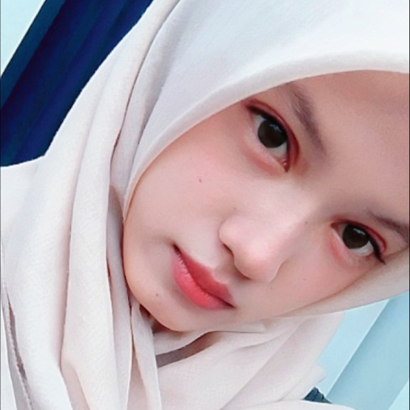
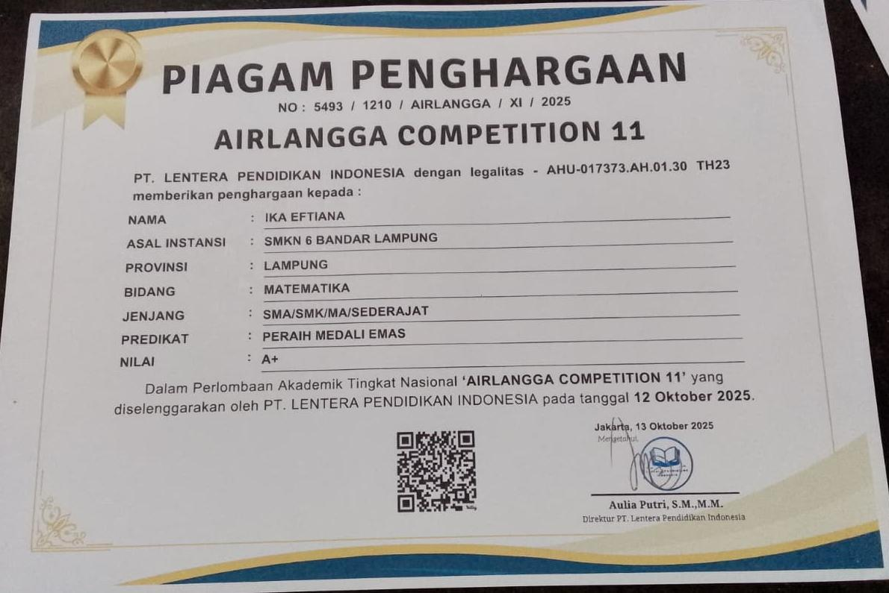
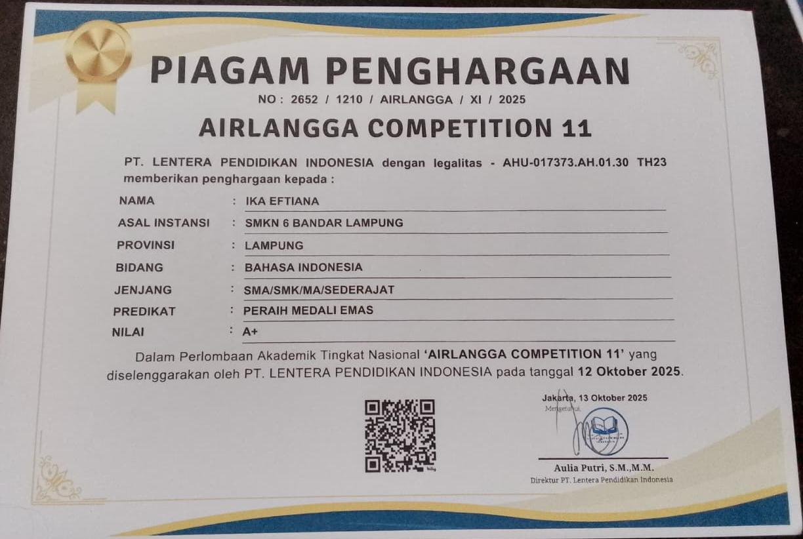
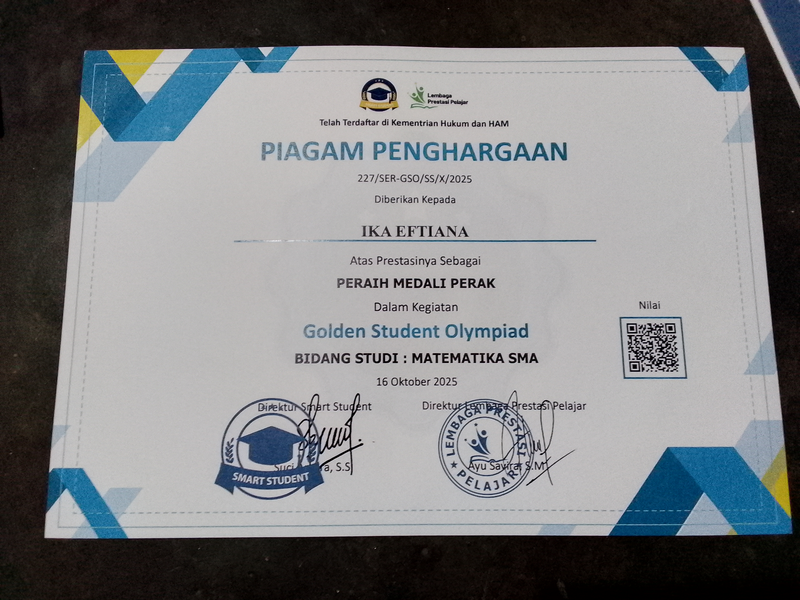
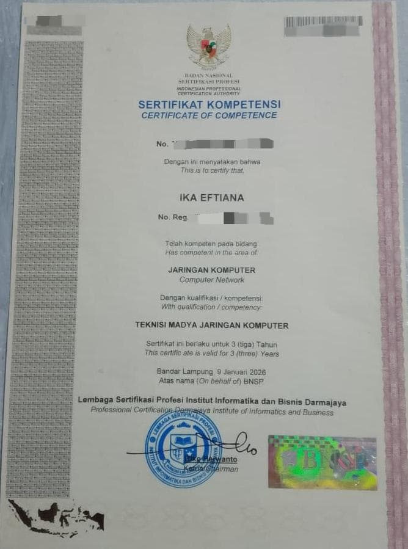
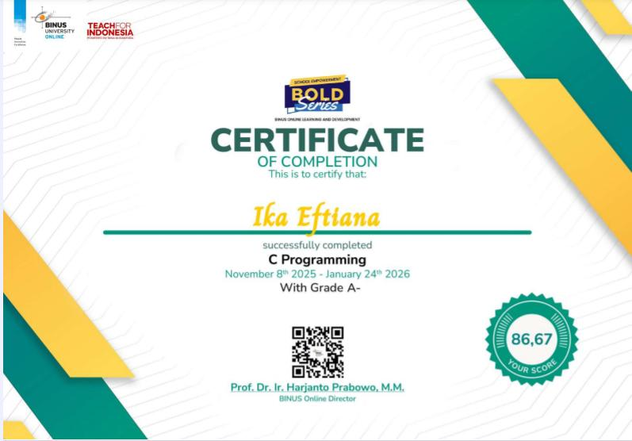
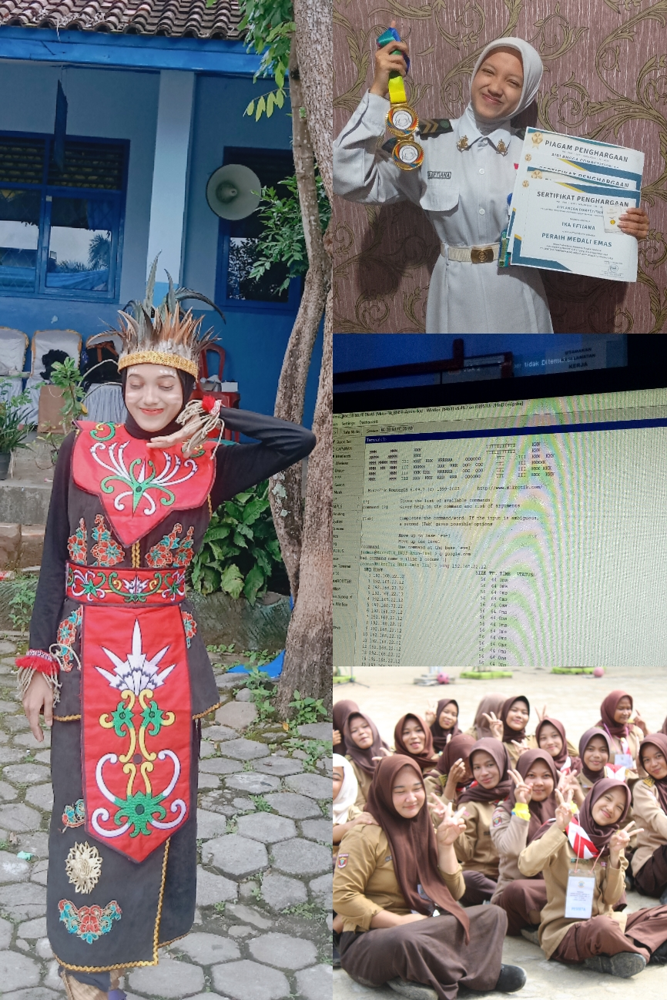

WELCOME TO MY PORTFOLIO
Mahasiswa Teknik Informatika yang sedang belajar, berkembang, dan mencoba hal-hal baru.
About Me →
ABOUT ME
Halo! Saya Ika Eftiana, mahasiswa Teknik Informatika yang sedang memulai perjalanan di dunia teknologi. Website ini menjadi tempat untuk menyimpan perjalanan, pengalaman, karya, dan berbagai pencapaian saya.
Mahasiswa Teknik Informatika
Memulai dan mengembangkan kemampuan di dunia teknologi.
Terus belajar, berkembang, dan menghasilkan karya.
MY JOURNEY
Setiap tahap pendidikan menjadi bagian dari perjalanan saya untuk terus belajar, berkembang, dan mencoba hal-hal baru.
Teknik Komputer dan Jaringan (TKJ)
Selama menempuh pendidikan di SMKN 6 Bandar Lampung, saya mendapatkan berbagai pengetahuan dan pengalaman di bidang teknologi, seperti jaringan komputer, subnetting, MikroTik, Microsoft Office, hingga perakitan dan bongkar pasang PC.
Selain kegiatan akademik, saya juga aktif mengikuti berbagai kegiatan dan ekstrakurikuler, seperti Rohis, Karate, Pramuka, dan seni tari. Saya juga berkesempatan mengikuti kegiatan KKRI di Lanal Lampung.
Momen bersama teman-teman seperti Madabintal, kegiatan kemah Pramuka hingga menjadi Bantara, serta mengikuti lomba senam P5 menjadi beberapa kenangan yang paling berkesan selama masa sekolah.
Teknik Informatika
Memulai perjalanan baru di dunia Teknik Informatika, belajar berbagai hal tentang teknologi, dan terus mengembangkan kemampuan melalui pengalaman baru.
PROJECTS
Project yang pernah saya kerjakan akan ditampilkan di sini.
Sedang dalam proses belajar dan membuat project pertama.
GALLERY
Kumpulan sertifikat, prestasi, kegiatan, dan momen-momen berharga dalam perjalanan saya.

Airlangga Competition 11 — Tingkat Nasional, 2025.

Airlangga Competition 11 — Tingkat Nasional, 2025.

Golden Student Olympiad — Tingkat Nasional, 2025.

Uji Kompetensi dari BNSP, 2026.

Kegiatan pembelajaran dasar pemrograman C, 2026.

Berbagai momen berharga selama masa sekolah.
CONTACT
Kalau ingin terhubung atau mengenal saya lebih dekat, kamu bisa menghubungi saya melalui email atau Instagram.